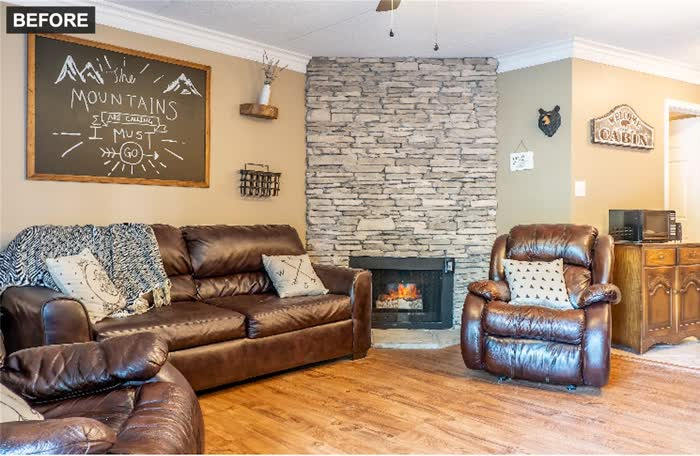
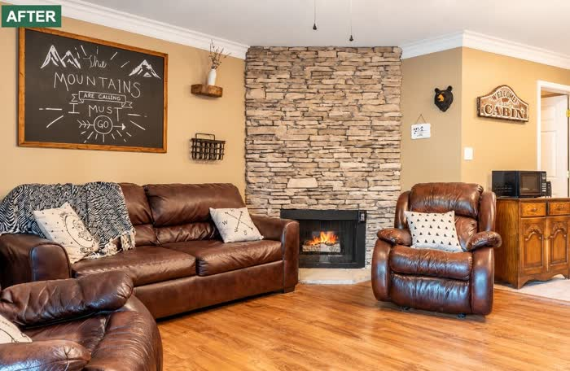

How we edit a photograph
We offer one service: enhancing property photographs for rentals, hospitality and real estate. This page describes the standard we apply to every image.
Why the standard is narrow
A photograph of a rental, a hotel room or a property for sale makes a promise to the person looking at it. The closer the photograph is to the place, the better that promise is kept.
So our scope is deliberately narrow. We improve how the place is seen. We do not change what the place is. Each correction below serves the first aim, and each limit serves the second.
A narrow scope is easy to state, apply and verify. Every image gets the same standard, whatever the property.
What we correct
We correct light, color, sharpness and straight lines. These decide how clearly a photograph shows the room, and correcting them keeps it faithful to the place.
If a scene has temporary clutter, such as a remote control on a sofa, we may remove it. Temporary clutter is not part of the place, so removing it does not change what the place is.


What we never do
The standard rests on one principle: nothing is added and nothing is hidden. The photograph must match the real place.
| We do | We do not |
|---|---|
| Correct light, color and sharpness | Add anything that is not in the place |
| Correct straight lines | Hide anything that belongs to the place |
| Remove temporary clutter | Alter the original file |
A guest, tenant or buyer who arrives should find what the photograph showed. That is what we protect, and it is the test for every edit.
How each image is checked
We do not deliver an image on the editing alone. Every image is checked against the original before it reaches you.
- We compare the edited image with the original.
- We confirm that the photograph still matches the real place.
- We deliver the image to you.
We never alter the originals.
What you receive
You send your photographs. We edit them and deliver the edited images within one day.
You see every edited image first and decide which ones to use.
You get photographs you have reviewed, that we have checked against the originals, and that show the property as it is. If you have a question about an image, write to us at the address below.